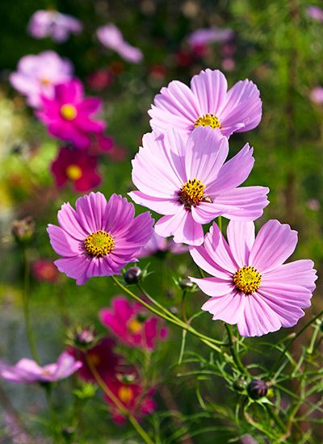
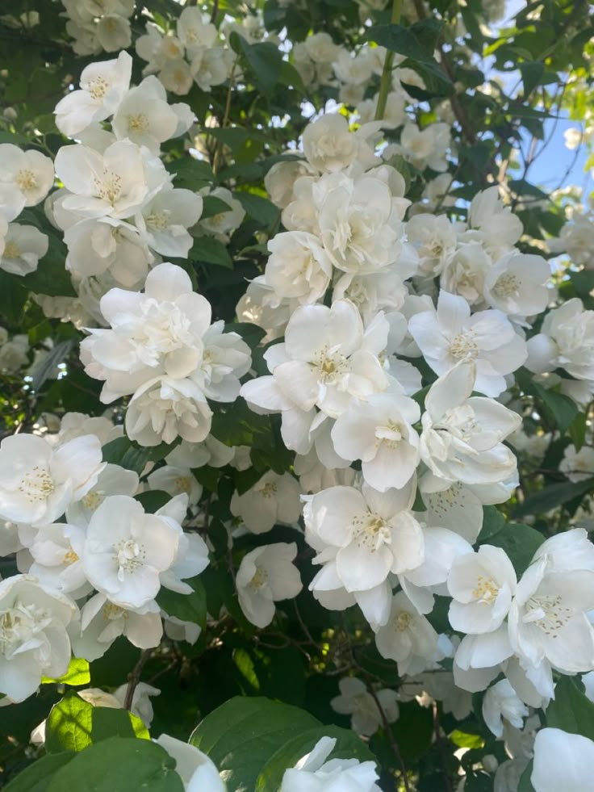
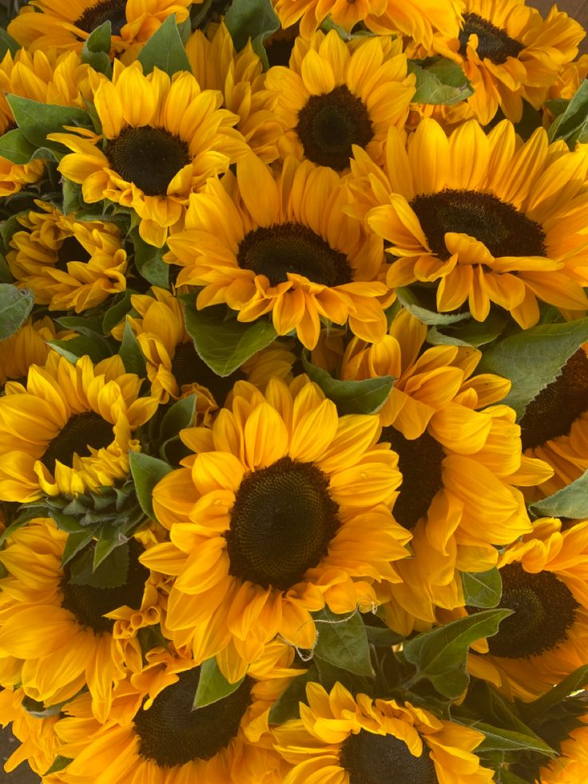

Collection Exclusive Bio
Graines Premium
Cultivez votre propre magie
Découvrez notre sélection de graines biologiques accompagnées de magnifiques vases recyclés. Transformez votre intérieur avec élégance grâce à la lavande, au cosmos, à la tulipe, au jasmin et au tournesol.

Cosmos
Tulipe

Jasmin
